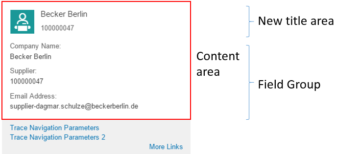

Enabling Quick Views for Smart Link Navigation
You can enrich the popovers for smart link navigation with additional information to display quick views.
Context
You can display information about the navigation target already on the source entity.
This information - the quick view - is stored in the association end type. To enable
the quick views, you have to annotate
com.sap.vocabularies.UI.v1.QuickViewFacets at the association
end type of the property that has been annotated as a semantic object. If you
annotate QuickViewFacets for the popover, a new title area and
additional information, such as, a field group, are displayed according to the
QuickViewFacets.
This video shows the step-by-step procedure for enabling quick views for smart link navigation:
Disclaimer: The below video  is not part of the SAP product documentation. Please read the legal disclaimer for video links before viewing this video.
is not part of the SAP product documentation. Please read the legal disclaimer for video links before viewing this video.
is not part of the SAP product documentation. Please read the legal disclaimer for video links before viewing this video.
To do so, perform the following steps:
Procedure
Results
